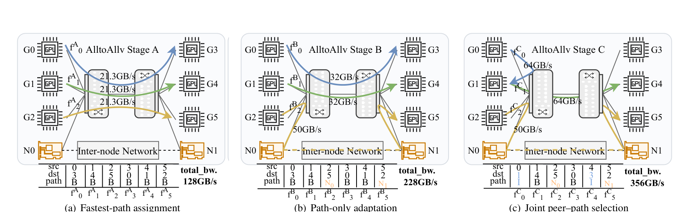
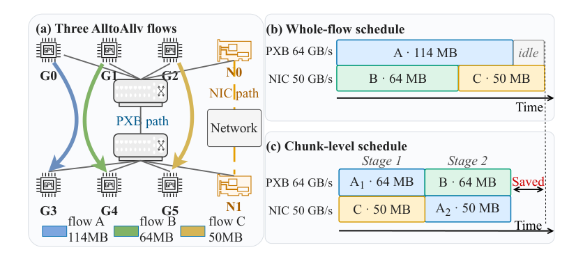
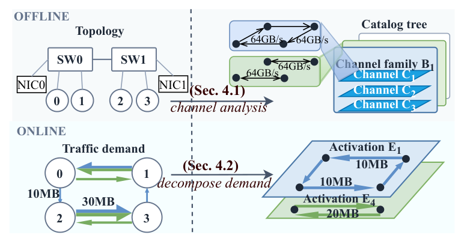
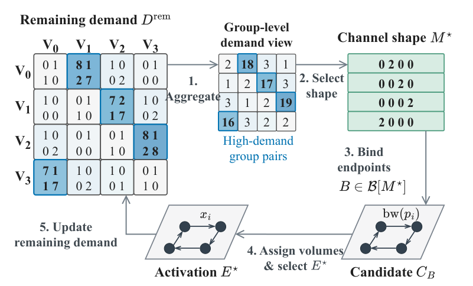
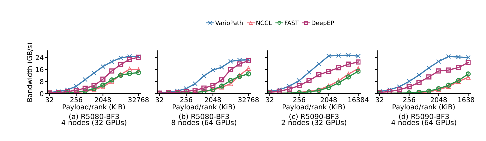
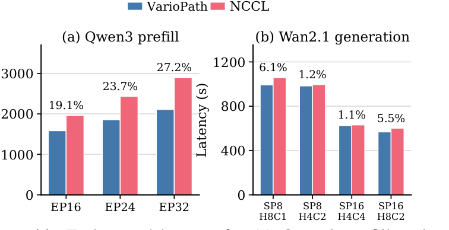
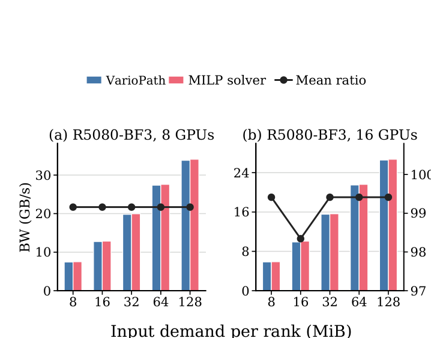

VarioPath: Workload-Aware All-to-All Communication for PCIe GPU Clusters
PCIe GPU 叢集裡，AlltoAllv 的困難不是只有「哪張 GPU 傳給哪張」，而是邏輯上互不重疊的傳輸仍可能在同一條 PCIe 鏈路相撞。VarioPath 把不常變的拓撲先離線壓成可重用的 channel-family catalog，再讓每次動態、偏斜的需求只在線上做 peer、path 與 chunk 的聯合分解。
實驗事實在四個 PCIe 平台、最高 256 GPU 的測試中，它在 random-demand AlltoAllv 對 DeepEP 的幾何平均加速為 1.55–2.00×，並把 Qwen3 prefill 延遲降低 19.1–27.2%；但 Wan2.1 的改善只有 1.1–6.1%，提醒我們通訊微基準的優勢不會等比例轉成所有端到端收益。§6.1–6.2 · PDF pp.10–11 · Fig. 7, 11
文章目錄
先把 AlltoAllv 看成「誰要送多少」與「實際走哪條線」兩層
第一個理解障礙，是把 AlltoAllv 誤想成「很多獨立的點對點傳輸」。VarioPath 的貢獻建立在兩層同時存在：上層是每一對 rank 到底有多少資料要送，下層是這些邏輯流實際穿過哪些 GPU、PCIe switch 與 NIC 鏈路。只看其中一層，就看不到它要解的衝突。
需求矩陣：AlltoAllv 不是均勻交換
一個 (N)-rank 的 AlltoAllv 呼叫可寫成需求矩陣 (D\in\mathbb{Z}_{\ge 0}^{N\times N})，其中 (D_{ij}) 是 rank (i) 要送給 rank (j) 的位元組數，且本地資料 (D_{ii}=0)。一般 AlltoAll 讓每對 rank 的訊息大小相同；AlltoAllv 允許每個 (D_{ij}) 不同，因此能表示 Mixture-of-Experts（MoE）中由 token routing 產生的偏斜 dispatch/combine，也能表示 sequence parallelism 中 attention tensor 的重新分配。§2.1, §3 · PDF pp.2, 4
| 型態 | 需求 | 主要風險 | 本論文用途 |
|---|---|---|---|
| AlltoAll | 每個 rank 對所有 peers 傳相同資料量 | 固定路徑是否把均勻流量擠在共享鏈路 | 驗證收益不只來自流量偏斜 |
| AlltoAllv | 每個 (D_{ij}) 可獨立變動 | 共享鏈路 contention 加上長尾 flow | MoE 與序列平行推論的主要目標 |
一個 stage 先限制端點，但不保證中間鏈路安全
典型 pairwise-exchange schedule 會把交換切成多個 stages；每個 stage 內，每個 rank 至多送給一個 peer、也至多從一個 peer 收資料。這能避免 receiver-side incast，卻只保證端點互斥。若兩條 logical transfers 在 PCIe 樹中穿過同一條 inter-switch link，仍會共享頻寬。論文把「rank 配對」稱為 peer matching，把每一對實際採用的物理路線稱為 path assignment；VarioPath 必須聯合選兩者。§2.1 · PDF pp.2–3
為何 MoE 讓線上決策變得急迫
MoE 的 token-to-expert assignment 在每層都會重算，所以每層都可能產生新的 (D)。論文指出某些每層執行時間低於 1 ms；若排程器要為每次呼叫重新解一個耗時數秒到數小時的組合最佳化，排程本身就會吞掉收益。作者主張因此真正的系統問題不是「能不能找到好 schedule」，而是「能不能在 topology-aware 的同時，讓每次需求的規劃足夠快」。§2.1–2.2 · PDF pp.2–4
有了需求矩陣、stage、peer 與 path 四個物件，下一步就能精確回答：為什麼端點已互斥，PCIe 還是會堵住？
端點互不衝突，為何 PCIe 鏈路仍會塞車？
核心症狀有兩個：同一 stage 裡的傳輸在共享 PCIe 鏈路上彼此降速，以及少數大流量在其他路徑已閒置後仍拖住整個呼叫。兩者都不是單靠「每張 GPU 一次只對一個 peer」就能消除。
症狀一：邏輯端點不重疊，物理路徑仍重疊
Figure 1 固定同一個 AlltoAllv 呼叫，依次比較三種 stage。最快路徑指派讓多條 flow 擠在 inter-switch PCIe links 上，模型化 aggregate bandwidth 只有 128 GB/s；只改 path 後升到 228 GB/s，但 cyclic peer matching 仍留下 contention；同時改 peer 與 path，才把 PIX、PXB 與 NIC 路徑配成無共享 modeled resource 的組合，達到 356 GB/s。這是方法因果鏈最重要的反例：path-only adaptation 不足，peer-only adaptation 也不足。§2.3 · PDF p.4 · Fig. 1

症狀二：整條 flow 綁死一條路，會留下 communication tail
即使沒有 contention，AlltoAllv 也要等最慢 logical transfer 完成。Figure 2 的 flow A 有 114 MB，B 有 64 MB，C 有 50 MB；若 B、C 都排在 50 GB/s 的 NIC path，64 GB/s 的 PXB path 會先空著。把 A 切成 64 MB 與 50 MB 兩塊，第二輪讓 A 的剩餘 chunk 改走 NIC、B 走 PXB，兩條路徑的負載更接近，尾巴因而縮短。這個例子只說明負載平衡直覺；真實排程仍要同時處理多 ranks、多路徑與每個 activation 的固定成本。§2.1, §2.3 · PDF pp.3–4 · Fig. 2

最接近的替代方案，分別卡在哪裡？
| 設計族 | 保留了什麼 | 在 PCIe AlltoAllv 的缺口 |
|---|---|---|
| NCCL / MSCCL | 低 runtime overhead；控制傳輸次序與 concurrency | 路徑在 communicator setup 時固定，無法隨 (D) 調整物理 path |
| FAST / DeepEP | 藉 node-local forwarding 平衡或減少 scale-out traffic | 假設有獨立高頻寬 scale-up fabric；PCIe-only 平台新增的 intra-node traffic 會和 NIC traffic 爭同一層級 |
| TACCL / TE-CCL / SCCL 類 synthesis | 能聯合建模 topology、path 與 demand | reported synthesis time 從分鐘到小時，不能每層重跑 |
分析因此需求可濃縮為四點：用 joint peer–path selection 避免 shared-link contention；把大 flow 切塊以適應殘餘需求；把 topology 的組合搜尋移出 critical path；並把線上成本壓到每個 activation 幾十微秒等級。VarioPath 的所有元件都應該能回扣其中至少一點。§2.2–2.3 · PDF pp.3–4
問題已拆成「固定拓撲」與「變動需求」兩種時間尺度；VarioPath 的關鍵洞見，就是不要在每次呼叫裡把兩者重新一起求解。
把固定拓撲編成 channels，讓每次需求只做輕量分解
最小心智模型是：先把一台機器所有「可以同時安全跑」的 peer＋path 組合做成積木庫；呼叫到來時，不再搜尋整張拓撲，只挑積木並決定每條 lane 放多少 bytes。論文把一塊積木稱為 channel，把本次放入資料量後的執行單位稱為 activation。
Channel 只描述形狀，activation 才帶資料量
形式上，一個 channel (C=(\pi,\mathbf{p})) 由非自身 permutation (\pi) 與 path vector ( \mathbf{p}=(p_i)_{i\in V}) 組成。(\pi(i)) 決定 source rank (i) 的唯一 destination，(p_i\in P_{i,\pi(i)}) 決定實體路徑。由於 (\pi) 是 permutation，每個 rank 恰有一條 outgoing 與 incoming lane；channel 本身沒有指定 bytes。Activation (E=(C,\mathbf{x})) 再為每條 lane 加上 (x_i\ge 0)，其 demand contribution 記為 (X(E))。§3 · PDF pp.4–5 · Table 1
這是 channel 的保守可行性條件：對每個 modeled directed shared resource (\ell)，同一 activation 內至多一條 path 使用它。反方向與平行實體鏈路算不同資源；GPU 到 switch 的 endpoint-local link 由 permutation 自然互斥。來源：§3，PDF p.5，Eq. 1。
真正的切割：把 topology search 留在離線，把 demand decomposition 留在線上
拓撲通常比每層 routing 穩定得多。離線 analyzer 因此先找出 feasible channels，再用 topology symmetry 把大量 rank-level channels 壓成 channel families 與 catalog tree；線上 scheduler 只對當前 (D) 逐輪挑 family、綁 endpoint、分配 volumes。Figure 3 的虛線正是兩種時間尺度的邊界。作者主張這個 separation 讓 scheduler 同時保留 topology awareness 與 per-invocation adaptation，而不必重做 combinatorial topology search。§2.3, §4 overview · PDF pp.4–5 · Fig. 3

有效 schedule 是 activations 的有序序列 (S=\langle E_1,\ldots,E_K\rangle)，必須精確重建需求： (\sum_k X(E_k)=D)。估計完成時間則把每輪固定成本 (\lambda) 加上該輪最慢 lane 的傳輸時間：
(x_{k,i}) 是第 (k) 個 activation 在 lane (i) 的 bytes， (\operatorname{bw}(p_{k,i})) 是估計路徑速率。更多 activations 能更細緻地 remap chunks，卻會多付 (\lambda)；這正是 Figure 2 的直覺被形式化之處。來源：§3，PDF p.5，Eq. 2。
Channel 解釋了「可以同時跑什麼」；剩下的問題是 catalog 如何不爆炸，以及線上如何把當前需求快速填進這些積木。
VarioPath 如何從 catalog 走到一串可執行 activations？
方法章的理解障礙，是離線 catalog 與線上 scheduler 使用不同粒度：前者把拓撲相等的 ranks 聚成 groups，後者最後仍要回到每一對 rank 與實際 bytes。下面先走一次端到端流程，再拆開兩側的資料結構。
端到端：一次呼叫如何變成多個 activations
- 載入固定拓撲的 catalog，初始化殘餘需求 (D^{\mathrm{rem}}=D)。
- 把 rank-level 需求聚合成 group-pair 壓力 (\widehat{D}_{ad})，挑一個把更多 lanes 配給高壓 pair 的 channel shape。
- 對該 shape 下每個 family，把尚未綁定的 group-level paths 指派到具體 source/destination ranks。
- 依 time quantum (\tau)、路徑速率與剩餘需求分配每 lane bytes，選 useful-bytes-per-time 最大的 activation。
- 從 (D^{\mathrm{rem}}) 扣掉 (X(E^*))，直到所有 entries 歸零。
Figure 5 把這五步畫成閉環。請注意 scheduler 不是一次產生「永遠固定」的 path：每輪扣除已服務需求後會重新計分，所以當某些 flows 提前完成，後續 chunk 可以轉向新空出的 capacity。§4.2 · PDF p.7 · Alg. 2, Fig. 5

離線側：用 group symmetry 壓縮 channel 空間
VarioPath 把同一 PCIe switch 下、拓撲等價的 (g) 個 ranks 聚成 group (V_a)。Channel shape (M\in\mathbb{Z}_{\ge0}^{G\times G}) 只記 group (a\rightarrow d) 有幾條 lanes；每列、每欄都要合計為 (g)，才能在之後綁成每個 rank 恰好一進一出的 permutation。Family 再為 shape 挑選不共用 modeled resources 的 group-level path instances，但暫不決定具體端點。§4.1 · PDF pp.5–6 · Eq. 3–4, Fig. 4
Catalog 以 pruned binary depth-first search（DFS）建立：exclude/include 每個 path instance，只在資源互斥與 degree limits 仍可滿足時展開；suffix pruning 提前排除剩餘 instances 已不可能補滿 group 的狀態。建置前移除 footprint 不小且 rate 不高的 dominated paths，建置後再移除同 shape 下的 duplicate 或 rate-dominated families。分析這並沒有改變 worst-case (O(2^{|\mathcal{R}|}))；可擴展性來自實際拓撲的 symmetry、剪枝與「一次建置、多次重用」，而不是把離線問題變成多項式時間。§4.1 · PDF p.6 · Alg. 1
線上側：先以 bottleneck pressure 縮小搜尋，再解 endpoint assignment
每輪先計算 (\widehat{D}_{ad}=\sum_{i\in V_a}\sum_{j\in V_d}D^{\mathrm{rem}}_{ij})，再以
(M_{ad}) 是 shape 給 group pair (a\rightarrow d) 的 lane 數；所有 admissible shapes 的總 lane budget 相同，因此此分數會把有限 concurrency 偏向殘餘 bytes 較大的 pairs。只在 catalog domain 內選則保證 topology feasibility。來源：§4.2，PDF p.7，Eq. 5–6。
選到 shape 後，每個 family 仍要把 path instances 綁到具體 ranks。某個 instance (r) 綁到 ((i,j)) 的 provisional credit 是 (h_{ijr}=\min(D^{\mathrm{rem}}_{ij}/\tau,\operatorname{bw}(r)))：需求太少時不浪費高頻寬 path，需求很多時 credit 由 path rate 封頂。這是 bilinear assignment problem；實作用 multistart Alternating Algorithm（AA）交替固定 source 或 destination，讓每一步降成每 group 一個 (g\times g) assignment。§4.2 · PDF pp.7–8 · Eq. 7–8, Fig. 6
最後每 lane 取 (x_i=\min(\tau\operatorname{bw}(p_i),D^{\mathrm{rem}}_{i,\pi(i)}))，並以總 useful bytes 除以 (\lambda+\max_i x_i/\operatorname{bw}(p_i)) 作 utility。這個分母同時懲罰固定 round overhead 與最慢 lane；因此 scheduler 不會只追求更多小 chunks。§4.2 · PDF p.8 · Eq. 9–10
從 schedule 到資料面：避免規劃贏、runtime 輸
實作約含 3,000 行 scheduler 與 5,000 行 C++/CUDA runtime，跨節點使用 NCCL GPU-Initiated Networking（GIN）與 GDAKI。資料面先把每個 destination 的 fragments 與 metadata pack 成 contiguous symmetric buffers，再以 device-resident counters、double buffering 與 CUDA Graph replay 避免全域 barrier；論文在 32-GPU RTX 5090 測得該 barrier 約 20 µs。對 sparse expert traffic，32-bit control word 同時編碼 active experts bitmap 與 token count，零需求 pair 可跳過傳輸與等待。§5 · PDF pp.8–9
小訊息另有 sentinel-polling protocol：receiver 先把 idle buffer 設為 sentinel，sender 發 unsignaled puts，receiver 以 16-byte vector 輪詢。1 KiB microbenchmark 的 P50 是 7.872 µs，低於 GIN signal 的 12.928 µs 與 prepacked NCCL LL 的 9.726 µs；但這是兩台 RTX 5090 的單一小訊息測試，不足以代表所有 payload 與平台。實驗事實§5 · PDF p.9
方法鏈現在完整了：catalog 保證哪些組合安全，線上分解決定何時用哪一組，runtime 再把 schedule 落到資料移動。下一章檢查每一個因果主張是否真的被實驗分別測到。
速度提升來自正確排程，還是只在特定測試上佔優？
這一章不把「最快」當成單一結論，而是逐項問：跨平台 throughput 是否一致、偏斜是否真的被吸收、端到端 critical path 是否縮短、聯合 peer/path 是否必要、線上近似與成本是否站得住腳。每組結果都要連同 workload、baseline 與邊界一起讀。
共同實驗基線
四個平台涵蓋 RTX 5080、RTX 5090 與 L20，單節點 8 或 16 GPU，PCIe Gen4/Gen5，tree 或 ring PCIe topology，每節點 4 或 8 張 ConnectX-7/8 或 BF3-mini NIC；大規模測試使用 32 個 R5080-CX8 nodes、共 256 GPU，節點間是 two-tier leaf–spine。主要 metric 是 algorithmic bandwidth：總 payload 除以 ranks 數與 completion time；偏斜 workload 用所有 ranks 中的最慢 communication time。§6 · PDF p.9 · Table 2
Workloads 包含：256 experts、top-k (k=8) 產生的 random-demand AlltoAllv；Zipf 分佈的 skew AlltoAllv；uniform AlltoAll；Qwen3 expert-parallel prefill；Wan2.1 sequence-parallel generation。Baselines 是 NCCL、MSCCL、FAST 與官方 DeepEP V2。§6 · PDF p.9
主張一：收益不是某一種 payload 或單一 PCIe 拓撲的偶然
實驗事實Figure 7 在 R5080-BF3 與 R5090-BF3 的 32/64-GPU、共 42 個 matched points 上，VarioPath 每點頻寬最高。相對最接近的 DeepEP，幾何平均 speedup 依平台為 1.55–2.00×；相對 FAST 為 3.49–9.41×，相對 NCCL 為 3.73–10.61×。32→64 GPU 後，R5080-BF3 於 32 MiB/rank 的 VarioPath bandwidth 降 8.6%，仍比 FAST 快 1.72×；R5090-BF3 於 16 MiB/rank 則降 3.6%，FAST 降 12.6%。§6.1 · PDF p.10 · Fig. 7

可支持的結論：peer/path/chunk adaptation 的優勢跨兩種 GPU、兩種 local node count 與多個 payload 成立。限制：圖報告 p50 completion time，沒有 error bars；同時所有系統都在 NVIDIA/CUDA/NCCL 生態內，不能直接外推到 ROCm/RCCL。
主張二：方法不只吃到 skew，且在 256 GPU 仍保留效益
實驗事實Uniform AlltoAll 的 80 個 configurations 中，VarioPath 對 NCCL 與 MSCCL 的幾何平均 speedup 分別為 1.82×、1.99×；唯一未勝 MSCCL 的點是單節點 R5080-BF3、1 MiB。Zipf skewness (s=0.4\rightarrow0.8) 的 12 個 deployment–skew 組合則全部最快，對 FAST 幾何平均 2.16×；VarioPath bandwidth 降 9.4–12.3%，NCCL 降 15.2–27.0%。§6.1 · PDF pp.10–11 · Fig. 8–9
256-GPU random-demand test 以 hidden dimension 7168、top-k 8、每 rank token 數 (M=1\ldots128) 產生 workload。八個 (M) 值全部由 VarioPath 領先；在 (M=128) 時是 30.91 GB/s，DeepEP 28.11 GB/s，NCCL 18.85 GB/s。§6.1 · PDF p.11 · Fig. 10
可支持的結論：收益同時來自避開共享鏈路與依 stage 改 path，不只是把偏斜 traffic 做 node-local rebalance。限制：256 GPU 只有一種 R5080-CX8 topology 與合成 routing workload；未展示 multi-tenant interference 或 production trace。
主張三：通訊改善能進入推論 critical path，但轉換率高度依 workload
Qwen3–30B–A3B 測試是 uncached prefill：每次 8,192 input tokens、只生成一 token，於 2–4 個 R5080-BF3 nodes 跑 EP16/24/32，每點取 15 requests 的 client median。把 NCCL-based exchange 換成 VarioPath，prefill latency 分別降低 19.1%、23.7%、27.2%；expert-parallel degree 越大，dispatch/combine 暴露的跨 GPU/跨 node traffic 越多。§6.2 · PDF p.11 · Fig. 11a
Wan2.1 則在 8/16 張 L20 上產生 5 秒、BF16、1280×720 video，sequence length 75,600；四個 head/context parallel layouts 的 speedup 只有 1.011–1.066×，也就是 1.1–6.1% latency reduction。相同 SP degree 改變 H/C decomposition 就會改寫 rank-pair demand，顯示端到端收益由 communication fraction 與 layout 一起決定。§6.2 · PDF p.11 · Fig. 11b

可支持的結論：AlltoAllv 位於 critical path 且佔比夠高時，通訊 gains 能轉成雙位數 latency reduction。限制：沒有 decode-heavy、mixed request arrival、TTFT/TPOT tail 或 SLO goodput；Qwen 每次只產生一 token，不能代表一般生成服務。
主張四：聯合 peer–path 是必要機制，不是包裝上的複雜度
消融固定其餘元件，只改 eligible channel set；同一批 (s=0.6) 的五個 skew demand matrices 在 two-node R5080-BF3 重播。以 demand-aware peers＋dynamic paths 為 1.00× completion time，固定 peer rotation、保留 dynamic path 是 2.00×；保留 demand-aware peers、固定 nearest path 是 2.03×；兩者都固定則是 2.84×。§6.3 · PDF p.12 · Table 3
| 固定 nearest path | Dynamic path | |
|---|---|---|
| 固定 peer rotation | 2.84× | 2.00× |
| Demand-aware peers | 2.03× | 1.00× |
可支持的結論：在這個 workload 與 topology 上，兩個維度都不可由另一個替代。限制：只有 one topology、five matrices、single skew factor；尚未證明每種 PCIe hierarchy 都有相同 2× penalty。
主張五：輕量 heuristic 接近模型內最優，且線上成本可控
論文在 8/16-GPU R5080-BF3 上，對 8–128 MiB/rank、每種 topology-size 五個 dense Zipf matrices，共 50 calls，拿 VarioPath 對 solver-certified full MILP optimum。平均達到 MILP bandwidth 的 99.18%，平均 gap 0.82%；把每個 topology-size configuration 先平均後，ratio 是 98.34–99.41%，單一 instance 最低 91.92%。§6.3 · PDF p.12 · Fig. 12

在 8→256 GPU 的 catalog scale 上，離線建置由 0.8 秒、1.7 KiB 增至 5,673.603 秒（約 94.6 分鐘）、172,682.6 KiB（約 168.6 MiB）。線上每 activation 由 3.2 增至 78.12 µs；總 planning/communication ratio（O/C）由 0.0715% 到 4.1241%。§6.4 · PDF p.12 · Table 4
| Deployment | Shapes | Families | Catalog (KiB) | Offline (s) | Online (µs/act.) | O/C |
|---|---|---|---|---|---|---|
| R5080-BF3–8 | 3 | 6 | 1.7 | 0.800 | 3.2 | 0.0715% |
| R5080-BF3–16 | 41 | 438 | 132.0 | 4.950 | 20.6 | 0.7554% |
| R5080-CX8–256 | 1,616 | 2,140 | 172,682.6 | 5,673.603 | 78.12 | 4.1241% |
| R5090-BF3–16 | 115 | 248 | 123.0 | 15.520 | 8.3 | 0.3249% |
| R5090-BF3–32 | 308 | 389 | 806.7 | 99.250 | 21.1 | 1.1051% |
| L20-CX7–16 | 92 | 270 | 121.3 | 11.720 | 6.8 | 0.1476% |
| L20-CX7–32 | 352 | 462 | 905.0 | 86.940 | 20.8 | 0.7504% |
可支持的結論：離線 catalog 的確把線上 combinatorial search 壓到微秒級。限制：MILP 近似品質只在 8/16 GPU 驗證；256 GPU 的 4.1241% O/C 雖小於 communication time，卻不是免費，而且 catalog rebuild 是否能跟上 topology/rate 變動仍未測。
證據支持 VarioPath 是有效的 PCIe AlltoAllv scheduler；但「在模型內近似最優」與「在所有部署裡皆近似真實最優」之間，仍隔著模型假設與未測情境。
99.18% 最優不等於所有規模、平台與工作負載都近似最優
最容易誤讀的數字是 99.18%。它是 VarioPath 相對同一套 modeled resource、rate 與 sequential activation 假設下的 MILP optimum，而且只在 8/16 GPU 上驗證；不是對 256 GPU、所有 PCIe traffic interaction 或所有端到端 workload 的全域保證。
值得肯定的地方
- 分析因果鏈清楚。Figure 1/2 先分開 contention 與 tail，Table 3 再用兩維消融檢查 joint peer–path；不是只報一串 end-to-end speedups。
- 分析把時間尺度切對。Topology feasibility 適合離線重用，traffic demand 才需逐呼叫更新；這個 abstraction boundary 比某一個 heuristic 更具可移植性。
- 分析從 planner 走到 runtime。Pack/unpack、double buffering、device state、sparse control 與 small-message protocol 讓 schedule 不只停在 solver 模型。
- 分析負面幅度沒有被藏掉。Wan2.1 的 1.1–6.1% 增益仍完整呈現，讓讀者看見 communication fraction 對端到端轉換率的限制。
模型邊界：保守互斥可能犧牲可共享頻寬
Eq. 1 規定同一 channel 中，每個 modeled directed shared resource 至多被一條 path 使用。這讓每條 path rate 不需依 concurrent flows 動態變化，簡化 catalog 與 online scoring；代價是可能把能夠有利共存的 flows 序列化。論文沒有拿這個 conservative exclusivity 與「允許受控共享、使用校準 contention function」的模型比較，因此無法知道未利用容量有多少。§3 · PDF p.5 · Eq. 1
系統邊界：拓撲穩定不等於效能穩定
Catalog 假設 GPU/HCA hierarchy、shared-resource footprints 與 path rates 可在 setup 時量測後長期重用。但真實叢集可能有 link failure、NIC reroute、ACS/IOMMU 設定差異、熱降頻、背景 traffic 或 multi-tenant noise。論文未提供 rate profile 更新頻率、異常偵測、增量 rebuild 或 failover 行為；256 GPU catalog 的 94.6 分鐘建置時間，使這個缺口特別實際。分析§5, §6.4 · PDF pp.8, 12
實驗外部效度：平台、baselines 與 workload 仍偏窄
- 全部實機都是 NVIDIA GPUs 與 NCCL GIN/GDAKI；沒有 AMD Instinct、ROCm/RCCL、不同 PCIe routing policy 或 CXL fabric。
- TCCL、TACCL、TE-CCL 是相關機制，卻沒有成為主效能圖的 executable baselines；MILP 只在小規模提供 model-space 上限。
- Qwen 是 uncached 8,192-token prefill 且只生成一 token；缺少 decode-heavy、continuous batching、prefix cache、mixed arrival 與 SLO tail。
- 多數圖沒有 error bars；Qwen 報 15 requests 的 median，Figure 9 明確報五個 seeds，Figure 12 明確報每點五個 matrices，但其餘點的重複次數、warmup 與統計方法論文未提供。
- 程式碼公開位置與正式 venue 論文未提供，降低重現與部署細節的可查證性。
最穩健的結論是「在所測 PCIe NVIDIA 叢集與模型化資源互斥下，離線 channel catalog＋線上 demand decomposition 能顯著優於固定或 scale-up-dependent schedules」。不應把它延伸成「任何 PCIe 叢集、任何 collective、任何 serving workload 都有相同倍率」。
這些邊界並不削弱核心 separation；反而指出最有價值的後續工作，是讓 catalog 面對真實變動，並把效能模型從二元互斥擴展到可校準共享。
從保守避衝突走向可重配置、多租戶與跨廠牌
VarioPath 最可重用的不是某組係數，而是「穩定 constraints 離線編譯、動態 objective 線上求解」的系統形狀。接下來的研究可沿著模型真實度、重新配置、服務目標與跨平台四條軸展開。
三個可直接驗證的延伸
- Contention-aware soft channels。推測把 Eq. 1 的 0/1 exclusivity 改成由 microbenchmark 校準的共享曲線，允許兩條低負載 flow 共用 link；以真實 completion time 檢查是否能降低 activations 數，又不讓 rate prediction 失準。
- 增量 catalog repair。推測當 NIC/link failure 或 background traffic 改變有效 footprint/rate，只重算受影響 subtree 與 dominated families，而非 256 GPU 全量重建；測量 recovery time、schedule quality 與 stale-catalog 風險。
- SLO-aware online objective。推測把 utility 從 bytes/time 擴成 request criticality、TTFT/TPOT deadline 與 cross-layer communication overlap，讓同一個 (D) 的排程能依 serving pressure 不同而改變。
跨平台與 runtime 共設計
分析Channel family 只需要 paths、resource footprints 與 rates，理論上不綁 NVIDIA；真正綁平台的是 GIN/GDAKI、buffer protocol 與 topology discovery。最有資訊量的移植不是只把 runtime 改成 RCCL，而是比較 AMD Instinct 的 PCIe-only、Infinity Fabric/xGMI 與多 NIC topology：有獨立 scale-up path 時，FAST/DeepEP 的額外 forwarding 是否重新變得有利？Catalog 是否需要同時容納 shared-PCIe 與 non-blocking scale-up channels？
與 MoE routing 的閉環
推測目前 scheduler 接受 (D) 後才排程；另一條路是把 catalog 暴露的 capacity 當作 routing regularizer，讓 token-to-expert assignment 在模型品質約束下避開昂貴 group pairs。這會把「需求適應網路」推進成「routing 與網路共同最佳化」，但必須防止為了通信而破壞 expert specialization 或 load balance。
研究討論問題
- Eq. 1 的 conservative exclusivity 在哪一類 PCIe topology 上最浪費？如何設計一個不會讓 online planning 爆炸的 soft-sharing 模型？
- 99.18% ratio 若移到 64/256 GPU，最可能先被哪個 approximation 破壞：shape score、AA binding、固定 (\tau)，還是 sequential activation model？
- 若 production workload 同時有 MoE dispatch、KV transfer 與 storage DMA，catalog 的 resource set (\mathcal{U}) 應如何涵蓋跨子系統 contention？
- 對 serving SLO 而言，應最小化 collective completion time、critical request tail，還是整批 goodput？三者何時衝突？
- 256 GPU 的 168.6 MiB catalog 與 94.6 分鐘建置是否可接受，取決於 topology 多久變一次；實務上應用什麼穩定性指標決定 rebuild？
回答這些問題需要同時量到 topology、runtime 與 serving workload；這也正是 VarioPath 把「可重用拓撲知識」明確化之後留下的研究入口。
如何定位本報告的符號、數據與原文證據？
論文與分類
- 正式題名
- VarioPath: Workload-Aware All-to-All Communication for PCIe GPU Clusters
- 作者
- Yao Fei、Jin Fang、Size Zheng、Gongming Zhao、Hongli Xu、Jiacheng Zhu、Zhijing Xin
- 版本
- arXiv:2609.34340v1 [cs.DC]，2026-09-28；cross-list cs.NI
- 分類
- AI Infrastructure / Collective Communication。主要技術貢獻是 PCIe GPU 叢集上的 topology-aware、demand-adaptive AlltoAllv scheduling abstraction 與 runtime；MoE／sequence-parallel inference 是需求來源與評估工作負載，而非新的模型或一般 serving scheduler。
- 頁數
- 共 15 頁
- 連結
- arXiv 論文頁面 · 開啟本地 PDF
- Venue／Code
- 論文未提供正式 venue；論文與 arXiv 頁面未提供公開程式碼位置。
符號與名詞
- (D, D^{\mathrm{rem}})
- 原始與尚未服務的 rank-level AlltoAllv demand matrix。
- Peer matching
- 同一 stage 內 source rank 到 destination rank 的一對一 permutation。
- Path assignment
- 每一 logical peer pair 選擇的具體 PCIe/NIC physical path。
- Channel (C)
- 一個 contention-free peer＋path pattern；不含本輪資料量。
- Activation (E)
- Channel 加上每 lane volume vector；是一個實際執行的 AlltoAllv stage。
- Shape (M)
- 以 rank groups 為粒度的 lane-count matrix，壓縮具體 rank identities。
- Channel family (B)
- 在同一 shape 下選好的 compatible group-level path instances，尚未綁 endpoints。
- (\tau,\lambda)
- 線上 volume allocation 的 time quantum，以及每 activation 的固定 overhead。
- O/C
- 整次 online planning time 除以 communication time。
關鍵證據索引
- 問題機制：endpoint-disjoint transfers 仍共享 PCIe links；joint peer–path 的 128→228→356 GB/s 例子。§2.1–2.3 · PDF pp.3–4 · Fig. 1
- Chunk 直覺：64 GB/s PXB 與 50 GB/s NIC 的 whole-flow／chunk-level 對比。§2.1–2.3 · PDF pp.3–4 · Fig. 2
- 形式模型：channel feasibility、schedule reconstruction 與 slowest-lane objective。§3 · PDF pp.4–5 · Eq. 1–2
- 離線設計：rank groups、shape、family、DFS 與 dominance pruning。§4.1 · PDF pp.5–7 · Fig. 4 · Alg. 1
- 線上設計：pressure scoring、AA endpoint binding、volume utility 與殘餘需求迭代。§4.2 · PDF pp.7–8 · Fig. 5–6 · Alg. 2 · Eq. 5–10
- 主要 throughput：42 個 random-demand matched points、80 個 uniform points 與 12 個 skew combinations。§6.1 · PDF pp.10–11 · Fig. 7–9
- 規模：256 GPU、(M=128) 時 30.91 GB/s。§6.1 · PDF p.11 · Fig. 10
- 端到端：Qwen3 19.1–27.2% 與 Wan2.1 1.1–6.1% latency reduction。§6.2 · PDF p.11 · Fig. 11
- 因果與最優性：peer/path 消融、50-call MILP comparison 與最低 91.92% individual ratio。§6.3 · PDF p.12 · Table 3 · Fig. 12
- 成本：offline catalog 0.8 s–94.6 min、online 3.2–78.12 µs/activation、最高 O/C 4.1241%。§6.4 · PDF p.12 · Table 4